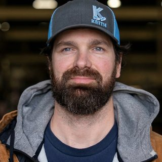

Copilot Adoption
Rollout, training, and measurement across 69 licensed users in a plant where most employees don't work at a computer. Adoption strategy for people who judge software on whether it makes the day shorter.

AI systems for a manufacturing floor — designed, built, and measured by the person who runs them.
Most AI programs fail at the last mile. The model works, the demo lands, and then nobody uses the thing.
My work is that last mile. I run Microsoft Copilot adoption across 69 licensed users at a 200-person manufacturer where most of the workforce is on the floor, not at a desk — so every tool has to justify itself in minutes saved, not capability demonstrated. I build the agents and automations myself, in Power Platform, Copilot Studio, Python, and Azure, and I measure them by whether people still use them in week three.
I came to this from the parts department. I spent 2025 pulling orders, taught myself retrieval systems on nights and weekends starting in late 2022, and moved into this role in January 2026. That path is why I'm skeptical of AI that looks impressive and saves nobody any time.
Pulled orders during the day. Taught myself retrieval systems and AI tooling on my own time, with no formal path into it — just a hunch this mattered and would keep mattering.
Took over Microsoft Copilot adoption for the plant. Inherited a rollout that needed to prove itself in minutes saved, not slide decks — a mandate that matched how I'd already been thinking about this.
Built and deployed the systems below — Copilot adoption at scale, a vision pipeline for handwritten shop logs, a Teams agent for part lookups — each one built to survive contact with people who don't have patience for tools that waste their time.
Rollout, training, and measurement across 69 licensed users in a plant where most employees don't work at a computer. Adoption strategy for people who judge software on whether it makes the day shorter.
Vision-model pipeline that reads handwritten shop-floor production logs and turns them into structured data. Replaced manual transcription of records that had never been digitized.
Conversational agent in Teams that resolves aftermarket part numbers on request. Built for the people who used to interrupt someone else to get the answer.